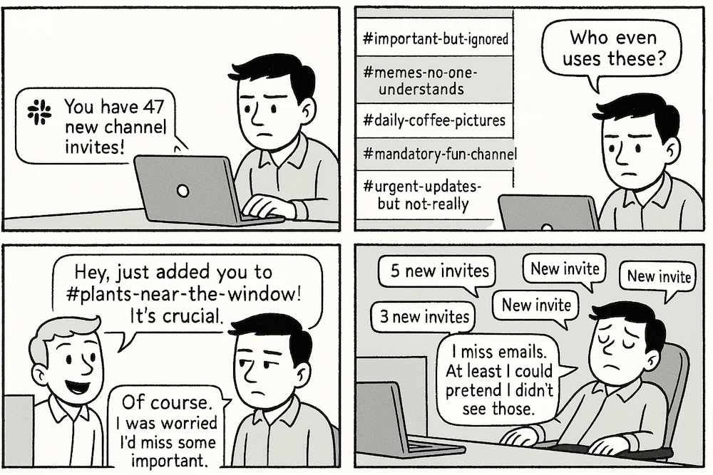

How hard would it be to take a topic and generate a one-page comic out of it?
At first, I had nothing more than a broad idea. ChatGPT would generate the scenario, define the layout of the comic page, and then Sora would generate the image.
I'm not trying to create 100% original art. It just needs to be close enough to pass as a meme—something shareable with friends and coworkers. No one expects to win awards with this.
Turns out, it's much easier than I expected. You can start with a vague topic and work your way through it using ChatGPT. On the other end, you get scenarios that can be used in Sora. I started with the following prompt:
I need a scenario for a sarcastic comic about work culture where there are too many Slack channels, and every day someone adds you to a new one.
I don't think I could've made it shorter than that. Certainly not vaguer.
And here was the output:
Scenario: "Welcome to the Channel"
Panel 1: Employee opens their laptop in the morning. Slack notification bubble says: "You have 47 new channel invites!" Employee (deadpan face): "Great, exactly what my life was missing."
Panel 2: Employee scrolls through Slack sidebar, showing channel names like:
#important-but-ignored #memes-no-one-understands #daily-coffee-pictures #mandatory-fun-channel #urgent-updates-but-not-really
Employee: "Who even uses these?"
Panel 3: A co-worker enthusiastically pops up over the cubicle wall: "Hey, just added you to #plants-near-the-window! It’s crucial!"
Employee: "Of course. I was worried I'd miss something important."
Panel 4: Employee, overwhelmed, sinking into their chair surrounded by Slack notifications: "I miss emails. At least I could pretend I didn't see those."
Did I make any changes to it before sending it to Sora? Yes, I specified the type of comic I wanted, since that wasn’t included in the result from ChatGPT. So I added the following line:
Simple graphics comics with 4 panels
That’s it. Here’s what I got from Sora:
All of that with minimal input from my side—just a thought and a vague direction.
My most creative contribution was probably deciding on the comic's drawing style.
This whole loop of "idea ➝ brainstorming with LLM ➝ image generation with Sora" is just fascinating. You can throw half-baked ideas at ChatGPT (or any other model), and it will help you shape them. Then you can use the output to generate visuals and continue from there.
Another interesting approach might be to take a picture, ask ChatGPT to describe it in detail, and then use that description to generate an image with Sora. You can iterate on it as many times as you want until you get the desired result.
But that’s a discussion for another time.